以下文章来源于CPSA ED ，作者CPSA ED
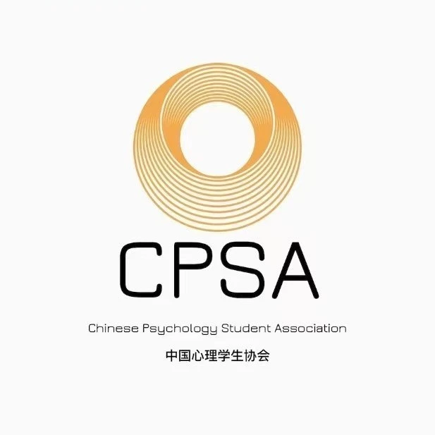
中国心理学生协会英国爱丁堡分部 —— 心理科普以及心理专业学生交流的平台


“
倾听热线
在这里聆听你的声音
”
在海外的日子里，你还好吗？
陌生的环境，快节奏的学业，繁重的DDL，或许让你感到压力倍增；文化的差异，语言的隔阂，社交的适应，也许让你在热闹中仍觉孤独。离开熟悉的家人和朋友，面对生活的种种挑战，有时候，心里藏着千言万语，却不知道该向谁诉说...
那些焦虑、迷茫、委屈、思乡的情绪，可能在深夜袭来，让你辗转反侧；那些想说又难以启齿的烦恼，也许早已积压，却找不到一个可以倾诉的出口。但请记得，你并不是一个人
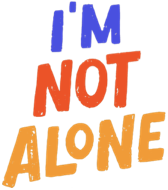
一位不会介入你的生活、善于聆听、友好的”陌生人“或许正是你需要的！
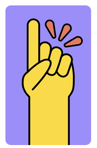
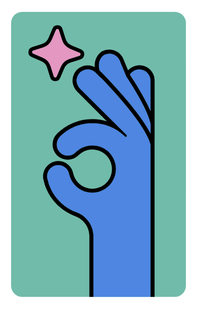
爱倾听公益热线，
在这里聆听你的声音！
让我们成为你情绪上的避风港！
我们的倾听师：
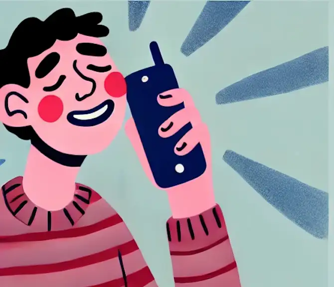
随时等候
善于倾听
年龄相仿
拥有留学经历
接受过系统培训
人超Nice！
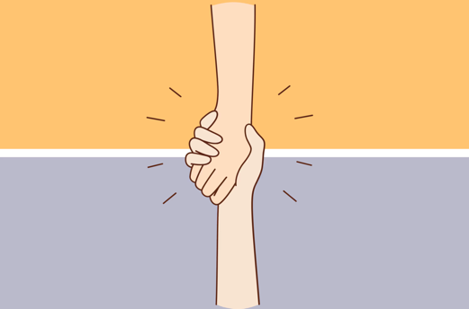
我们愿意提供一个安全、温暖的空间，
让你说出心中的苦闷与困惑。
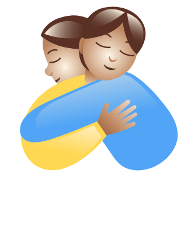
“
立春，新的开始，温暖回归
立春，
意味着新的希望，也象征着万物复苏。爱倾听公益热线，也将在这个充满生机的时节，于2月3日正式回归！我们仍然在这里，等待你的声音。
无论是学习的焦虑、生活的烦恼，还是深夜无法向朋友开口的心事，我们愿意成为你的情绪出口，一个安全、温暖、不评判的倾听空间。
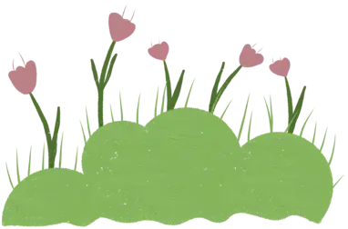
“
倾听热线，与你同行
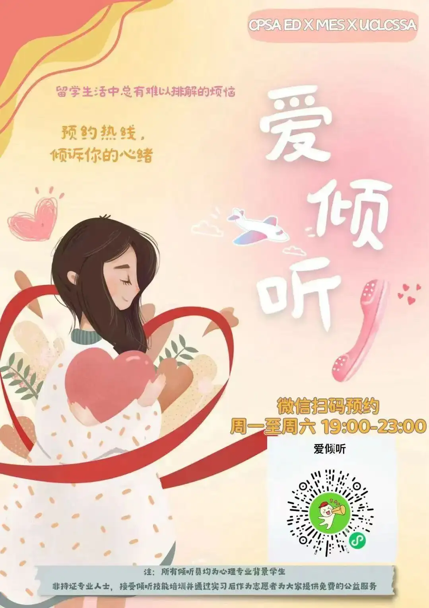
我们并非持证专业人士，但我们是接受过倾听技能培训并通过考核的志愿者，了解你的不易，也愿意真诚地倾听和陪伴。
谈话时，谈话内容都将严格保密，有什么无法和朋友开口的话，这里就是帮助你排忧解难的地方啦～
我们只会是你生活中的“陌生人”，
却是情感上的支持者。
◀
我们是谁？
▶
我们由CPSA协会爱丁堡分部发起的项目组成。CPSA，全称Chinese Psychology Student Association，是一个注册于美国华盛顿州的非营利性组织，由海内外心理学学生学者组成的公益性、学术性社会团体。是在其规模扩大系统完善后成立的公益项目—爱倾听热线，旨在为每一位有需要的同学提供情感支持和陪伴，帮助你在海外学习生活中找到一丝温暖。
重要提醒
——关于倾听师和我们的保密措施
所有倾听师均为心理专业背景学生，非持证专业人士，接受基本倾听技能培训并通过实习和考核作为志愿者为大家提供免费的公益服务。
倾听过程中，倾听师将会对所有信息严格保密哦，并且双方将签署保密协议。
谈话内容协会内部人员也无权知晓。
倾听师不会在现实生活中主动与来访者进行任何交集与干涉，尽可能做好“陌生人”
⚠️爱倾听热线并非专业心理咨询/心理治疗，非危机干预、非自杀干预热线，若存在此类情况，请务必直接联系专业机构寻求帮助。
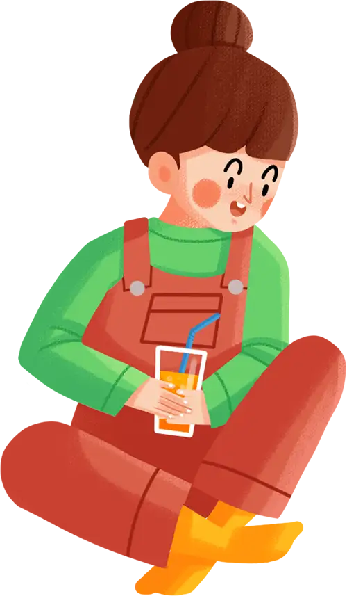
预约流程如下：
✦
•
✦
步骤一：找到我们！
打开微信公众号搜索：CPSA ED
关注爱丁堡心理协会“CPSA ED”公众号在下方服务界面，点击“爱倾听”、“预约二维码”，进入预约页面。
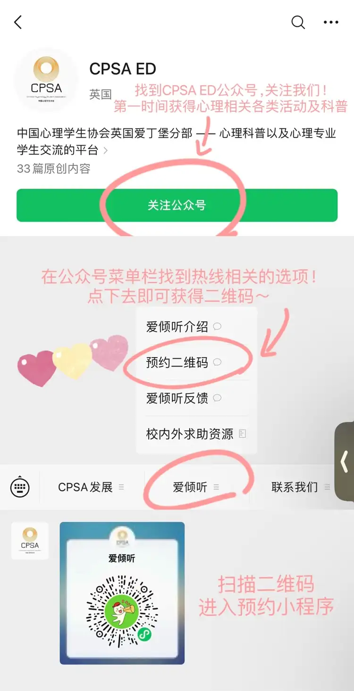
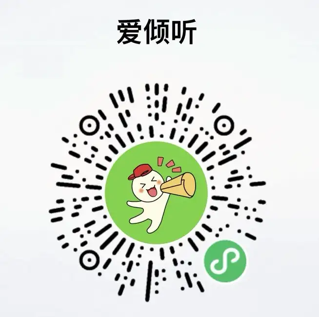
步骤二：进行预约
登录预约页面，选择合适的时间进行预约并等待我们的接线员与您联系。
步骤三：填写信息
填上您想被称呼的昵称，希望热线联系你的方式（微信 /腾讯会议 /zoom）可以指定倾听师的性别和昵称，我们会尽力安排，但不保证匹配结果。
步骤四：等待匹配
工作人员会在预约的倾听slot当天6pm左右联系您，匹配倾听员，并发送免责声明和保密协议两份文件，请您认真阅读并签订协议。记得关注手机的消息哦。
步骤五：正式开始
您会被分配到一名倾听师，在确保协议双方签字后，倾听正式开始。
步骤六：结束倾听
Session后，您会收到反馈调查表，自愿填写。
强烈建议您留下体验反馈！
如果体验良好，下次可要求匹配同一倾听师。
关注CPSA ED公众号，了解更多心理支持与科普内容，共同守护心灵健康。
CPSA ED
中国心理学生协会
爱丁堡分部
联系方式：[email protected]
作者 | 吴柯萱
设计排版 | 张金阳 胡维佳